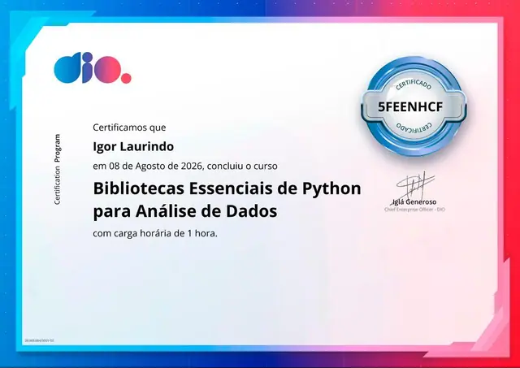

Inovação em cada Pixel.
Igor Laurindo – Especialista em Desenvolvimento Web e Automações Inteligentes
Transformo ideias em realidade através de código limpo, interfaces modernas e soluções automatizadas que geram valor para o seu negócio.


Quem é o IgorDev?
Focado em Resultados Reais
Sou Igor Laurindo, um desenvolvedor movido pela curiosidade e pela busca constante de eficiência. Minha missão é simplificar processos complexos através da tecnologia.
Domino ferramentas como Python, JavaScript e WordPress para criar desde landing pages de alta conversão até automações robustas que integram APIs, planilhas e bots para WhatsApp. Se você busca produtividade e uma presença digital impactante, você está no lugar certo.
Currículo Completo
Habilidades Estratégicas
Web Dev
Sites dinâmicos, responsivos e otimizados para SEO.
Automação
Scripts inteligentes e integração de sistemas.
Chatbots
Fluxos automáticos para atendimento via WhatsApp.
APIs & Cloud
Integração com Google Cloud, Gemini e mais.
Projetos em Destaque
Rápido & Seguro
Landing Page otimizada para logística, focada em performance e conversão direta.
WhatsApp Auto-Bot
Automação de agendamentos com integração direta ao Google Calendar.
Navegação Otimizada
Extensão que acelera o acesso a servidores de rede em ambientes escolares.
Certificações e credenciais

Vamos Conectar?
Tem um projeto em mente ou precisa automatizar processos? Vamos transformar seu desafio em solução.